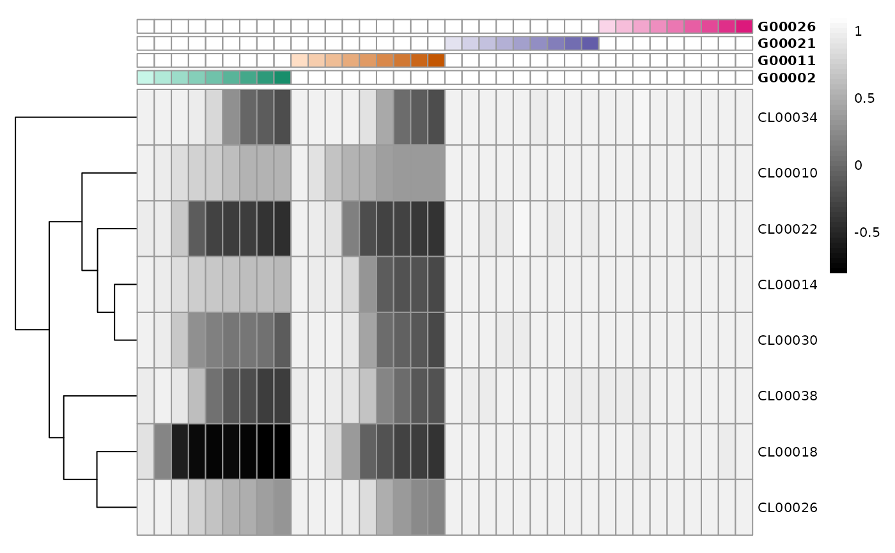
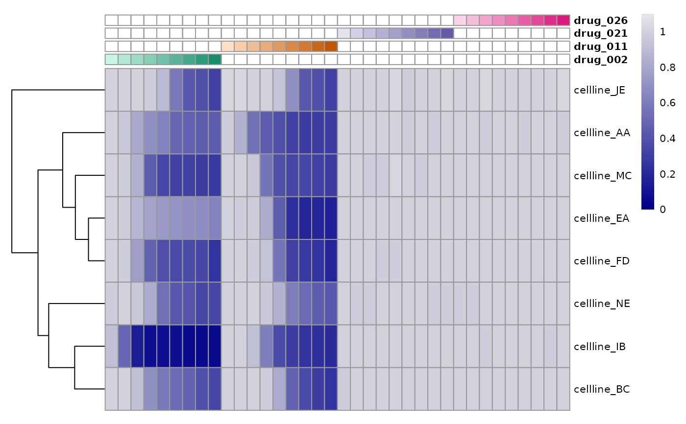
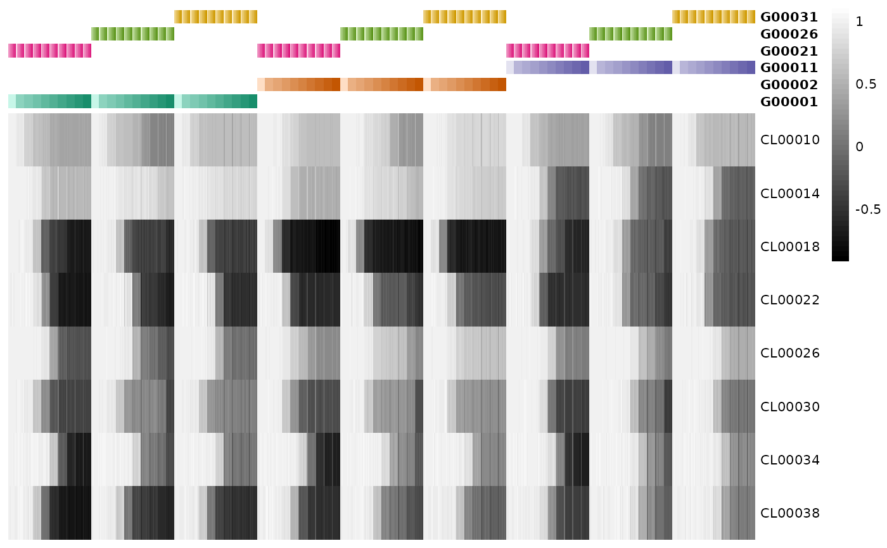
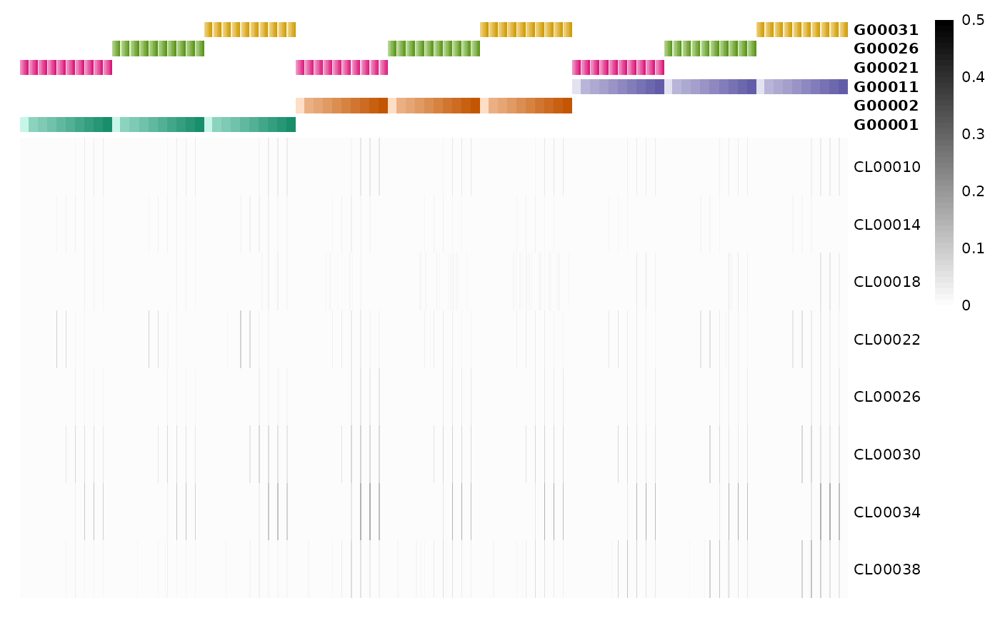

Plot pretty heatmap for single-agent or combo data to control quality of the data
Source:R/plot-pheatmap.R
pheatmap_qc.RdPlot pretty heatmap for single-agent or combo data to control quality of the data
Usage
pheatmap_qc(
dt_average,
normalization_type = "GR",
metric = "x",
fit_source = "gDR",
hm_title = NA,
colors_vec = c("black", "grey99"),
no_breaks = 50,
cluster_rows = TRUE,
distfun = compute_distances,
lbl_by_CellLineName = FALSE,
lbl_by_DrugName = FALSE
)Arguments
- dt_average
data.tablerepresenting data from theAveragedassay, outputted bygDRutils::convert_se_assay_to_dtandSummarizedExperimentwith chosen data type: single-agent or combo- normalization_type
string with normalization types to be selected one of: "GR" ("GRvalue") or "RV" ("RelativeViability")
- metric
string name of the metric; one of: "x" (value of "GR" or "RV" itself - respectively depending on
normalization_type), or "x_std" (standard deviation)- fit_source
string source name for metrics
- hm_title
string plot title
- colors_vec
character vector of colors (valid name or hex) used in heatmap note that for
metric"x" the first color will be assigned to the min value, and the last one - to the max; for "x_std" - that will be reversed- no_breaks
numeric number of breaks on scale used for mapping values to colors
- cluster_rows
logical flag whether rows should be clustered; the dendrogram will not be shown for the matrix with any dimension greater than 200.
- distfun
function used to compute the distance (dissimilarity) between rows; used for the dendrogram when
cluster_rowsis set to TRUE; the default iscompute_distancesusing Spearman method.- lbl_by_CellLineName
logical flag whether heatmap should be described by CellLineNames instead of clid
- lbl_by_DrugName
logical flag whether heatmap should be described by DrugName instead of Gnumber
Examples
mae <- gDRutils::get_synthetic_data("combo_matrix")
se <- mae[[gDRutils::get_supported_experiments("sa")]][2:5, ]
dt_average <- gDRutils::convert_se_assay_to_dt(se = se,
assay_name = "Averaged")
hm_1 <- pheatmap_qc(dt_average = dt_average)
hm_2 <- pheatmap_qc(dt_average = dt_average,
normalization_type = "RV",
colors_vec = c("darkblue", "grey90"),
lbl_by_CellLineName = TRUE,
lbl_by_DrugName = TRUE)
ggpubr::as_ggplot(hm_1[["gtable"]])

ggpubr::as_ggplot(hm_2[["gtable"]])

se <- mae[[gDRutils::get_supported_experiments("combo")]]
dt_average <- gDRutils::convert_se_assay_to_dt(se = se,
assay_name = "Averaged")
hm_3 <- pheatmap_qc(dt_average = dt_average,
cluster_rows = FALSE)
hm_4 <- pheatmap_qc(dt_average = dt_average,
metric = "x_std",
cluster_rows = FALSE)
ggpubr::as_ggplot(hm_3[["gtable"]])

ggpubr::as_ggplot(hm_4[["gtable"]])
